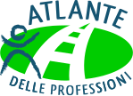
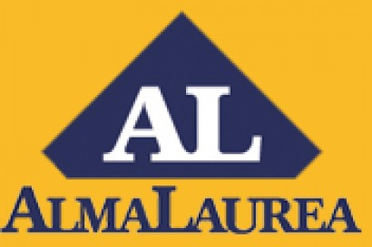

Obiettivo Lavoro
Perché parlare di orientamento al lavoro
Qualunque sia il percorso universitario che sceglierai, questo si concluderà con la possibilità di accedere con più competenze nel mondo del lavoro.
Il mercato del lavoro è molto sfaccettato e in continuo cambiamento. Una figura professionale può essere più richiesta in questo momento e meno ricercata tra qualche anno o decennio. Al contrario, una professione può essere poco richiesta oggi, ma molto ricercata in futuro. In mezzo a questa continua evoluzione, occorre fissare due aspetti:
- non fermarti al presente, pensa a come potrà essere il futuro,
- sviluppa la tua capacità di adattamento.
All’interno di questo scenario, tieni presente che l’ingresso nel mondo del lavoro non è uguale per tutti:
-
Alcuni laureati troveranno il lavoro per cui hanno studiato subito dopo il conseguimento del titolo;
-
Altri dovranno passare per molti stage e corsi di perfezionamento prima di poter firmare il loro primo contratto di lavoro;
-
Altri ancora rinunceranno al lavoro per cui hanno studiato perché per loro risulterà impossibile trovarlo o perché le condizioni economiche non saranno più soddisfacenti.
Tutti noi puntiamo alla prima situazione e immaginiamo che lo stesso valga per te. Allora non fermarti alla scelta dell'università e al corso di laurea, guarda oltre, pensa al tuo futuro e a chi potrai essere dopo la laurea.
Quali informazioni sul lavoro
Scegliere un percorso di studio comporta una scelta di competenze da acquisire e la possibilità di avere nuove opportunità lavorative. Per questo Quo Vado? vuole guidarti nella ricerca di informazioni relative agli sbocchi professionali.
Ora pensa al tuo possibile futuro professionale e individua tre possbili lavori che potrebbero essere adatti a te. Per ogni lavoro individuato valuta:
-
Il titolo di studio richiesto
- basta la laurea per lavorare?
- che tipo di laurea serve: triennale, magistrale o a ciclo unico?
- quanti anni servono, in media, per concludere gli studi?
- le competenze date dalla laurea quanto sono specifiche? Potresti in futuro utilizzarle per contesti lavorativi diversi?
- è possibile rimanere nella stessa città o dovrai trasferirti?
-
Quante prospettive di lavoro ci sono
ATTENZIONE al tasso occupazionale dei laureati! Questo si riferisce al numero di laureati che riferiscono di lavorare dopo la laurea, non è detto che svolgano la professione per cui hanno studiato!
- quanti annunci di lavoro si trovano per questa professione?
- qual è l'esperienza prevalente di chi attualmente svolge quel lavoro?
- quanto tempo potrebbe passare dal conseguimento della laurea al trovare il lavoro desiderato?
- dovrai trasferirti per poter fare il lavoro che desideri?
- quante possibilità ci sono di rimanere a lungo bloccato nella condizione di precariato?
- quale forma di lavoro è più probabile: libero professionista, dipendete privato o dipendente pubblico?
-
Quali sono le prospettive economiche
- quanto guadagna, in media, chi svolge questo lavoro?
- qual è il rapporto tra anni di studio e compenso economico medio?
- quante sono le possibilità di fare carriera?
Dove trovare le informazioni sul lavoro
Il web è pieno di informazioni su tassi occupazionali, mercato del lavoro, statistiche e opinioni varie, più o meno attendibili.
Sulla base dei punti sopra evidenziati vogliamo suggerirti alcuni siti dove poter trovare le informazioni necessarie:
-

Atlante delle professioni
Questo sito è stato creato dall'Università di Torino e consente di trovare molte informazioni riguardo alle diverse figure professionali. Te lo suggeriamo come punto di partenza per farti un'idea più precisa del lavoro che ti interessa, in particolare per i titoli di studio necessari.
Apri in una nuova scheda -

AlmaLaurea
Questo sito è considerato da molti il punto di riferimento per le statistiche sulla situazione lavorativa dei laureati italiani. Te lo suggeriamo come punto iniziale per raccogliere informazioni su prospettive lavorative ed economiche dopo la laurea.
Apri in una nuova scheda
Torna su